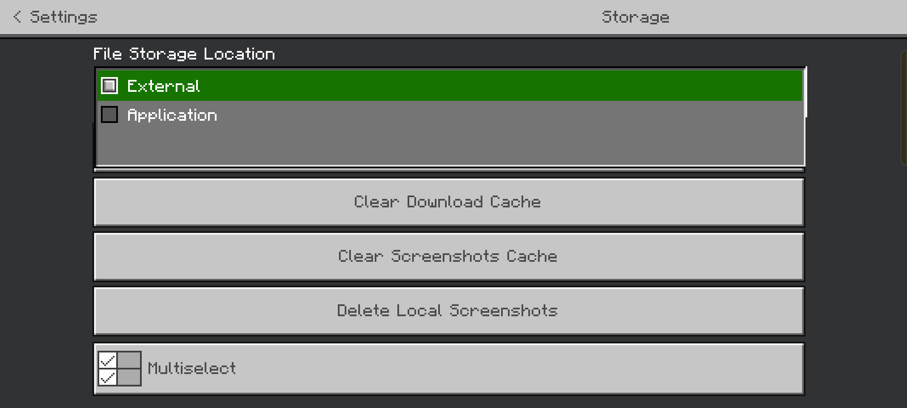
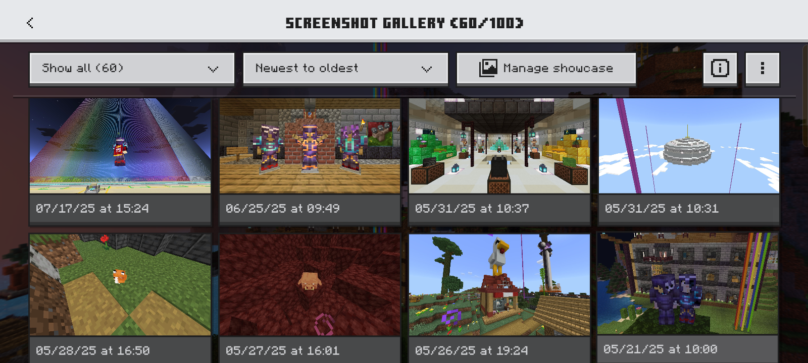
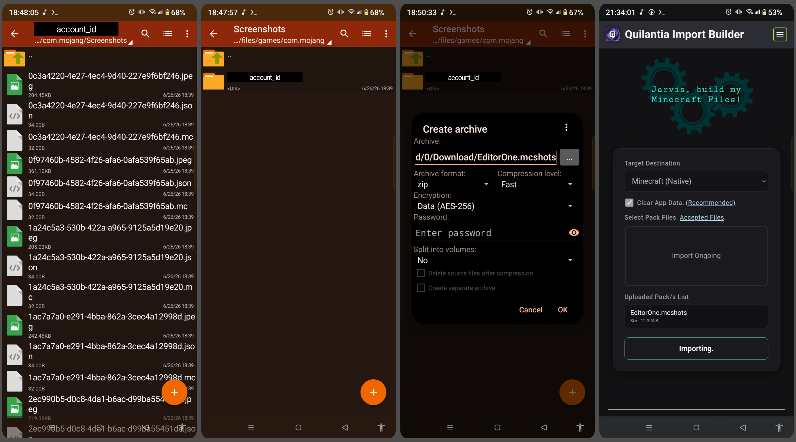
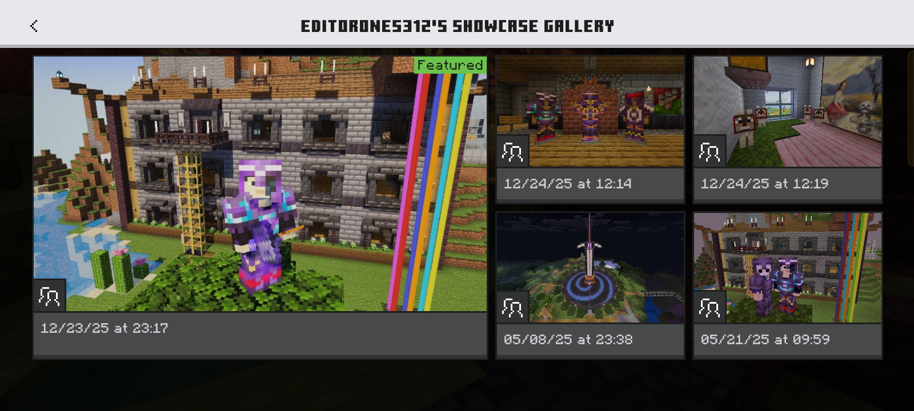

Table of Contents
What are Minecraft Files?
Minecraft Files are used for Minecraft's data archives that can be distributed and imported in Minecraft to make use of its contents in the game. There are official file types for Minecraft Bedrock that were documented by the game updates, and Minecraft creators and developers over time. Please refer to Minecraft Bedrock File Types for more information about this.
How to Use Import Builder Properly.
Prerequisite: Using the Import Builder requires at least basic knowledge of how file managers and Minecraft Files work, and using a Terminal (Termux).
To use the Import Builder, keep in mind that the files uploaded will be stored in your device and will create temporary copies to create the build properly. NodeJS also has a memory size limit for large files or stacked files depending on your device specifications. The memory limit is displayed in the terminal when starting the app and sets to 70% of your device's RAM if available.
Accepted file formats mentioned at the main menu made the Import Builder maximize its usage. After uploading all the files, you are good to go with the Import button and make sure your decision for clearing the App's data is also clear.
- Uploaded files are being processed by upload order.
- If a file encounters an error. It will not be counted as a processed file.
- When all files are processed but fail to transfer. The Import button should display as Continue Import to continue the build transfer.
- If Continue Import does not appear. Upload the same file again since the file's content is already assembled and would not impact your storage.
Before performing the import. Make sure that you have read the App Clear Data method for the operation.
Unknown/undefined error occurred.
This app is not always consistent, but it is guaranteed that issues may occur. Some common issues include:
- Upload Error: Check if the uploaded file is valid.
- Upload Error: Check the terminal with
bash checkbuild.shif directories are being created. Try again if the error is caused by missing directories. - Transfer Error: Check if commands used inside the scripts are not available to install them first.
- Transfer Error -
rishis not available or is disconnected from device: Check Shizuku setup if something went wrong. - Transfer Error: Storage access might be denied for Termux or by Android itself.
- Transfer/Export Error - Custom Android manifest package name does not exist: Check the spelling and should not include
com.mojangat the end. - Transfer/Export Error - Cannot compress archive: Try again.
If something happens that is not listed here. You can always check the terminal to find if it is a client-side problem or an actual bug.
Minecraft File Storage Location
Setting up your Minecraft File Storage Location is significant when managing Minecraft backup data.. Always practice setting the Minecraft File Storage Location to "External" from Start Menu by going to Settings > Storage > File Storage Location.

Minecraft Bedrock Screenshots?
The in-game screenshots feature was added in Minecraft Bedrock v1.21.30 and the screenshots are stored locally at com.mojang/Screenshots/ directory where its subdirectories are grouped associated with the Account IDs to manage their own galleries. Archiving the Screenshots/'s contents with .mcshots file extension can be used to restore those local screenshots in Minecraft using the Import Builder to be visible from accounts' gallery.


It is weird that in-game screenshots are limited to 100 captures only when they are not saved on some cloud server. Not saving them would lose all in-game screenshots taken not shared to the account's Featured Gallery which only showcases 5 captures.

For learning how to use in-game screenshots in Minecraft Bedrock, refer to Minecraft Bedrock Screenshots.
Exporting Minecraft Files
When it comes to exporting Minecraft files, you are essentially making a backup of your Minecraft data. If your Minecraft File Storage Location is already set to "External" then you can create a backup of your Minecraft data to the QIB - Export section.
Third Party Apps with Minecraft Files
Knowing that this can happen to any third-party app that utilizes Minecraft is one of the reasons why using them is risky.
To retrieve Minecraft data from a Third Party App assuming that it contains the entire com.mojang subdirectory, as the target directory:
- Identify the app's Android manifest package name with known apps such as APK Analyzer on Play Store.
- Use FV File Manager + Shizuku to bridge with
Android/data/subdirectories. - Find the matching package name of the app.
- Locate its
com.mojangdirectory to copy the path starting from the package name. (com.mojangexclusive) - Paste it to the custom filepath when importing or exporting.
After finishing an operation, do not forget to store the copied filepath somewhere for practicality.
Note that using this feature is risky and may damage your device if you are not careful.
Manual Minecraft File Management
If you are left with no choice but to manage your files manually. Start with using advanced file managers for Android such as ZArchiver, FV File Explorer, or MT Manager (Risky) and pair them with Shizuku to gain access from its ADB permissions to bridge with the Android/data/ subdirectories.
References
- How Minecraft Stores World Files on Your Android Device
- Minecraft - Caves & Cliffs: Part II - 1.18.0 (Bedrock)
- Minecraft - 1.21.30 (Bedrock)
- Storage updates in Android 11
- Bedrock Wiki: File Types
- Node.js documentation: Command-line options
- Shizuku from GitHub
- Shizuku Official Website
- FV File Explorer: Access /Android/data and /Android/obb on Android 14+ without root